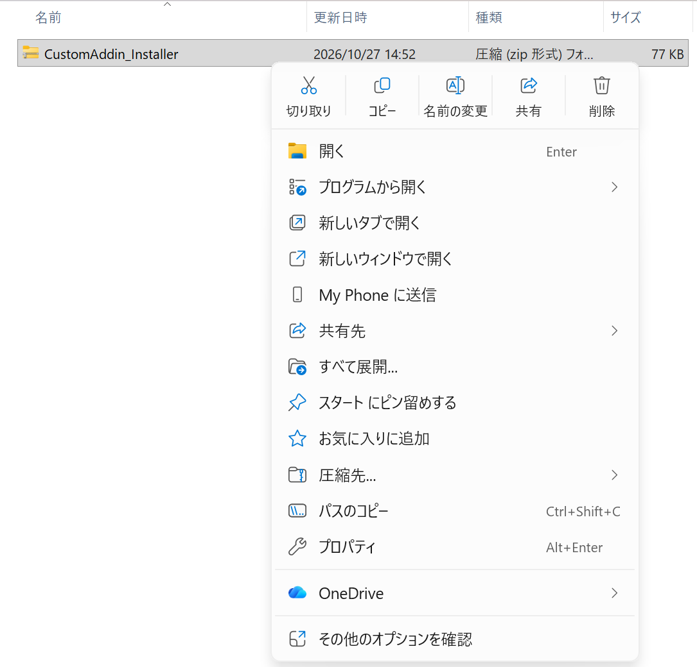
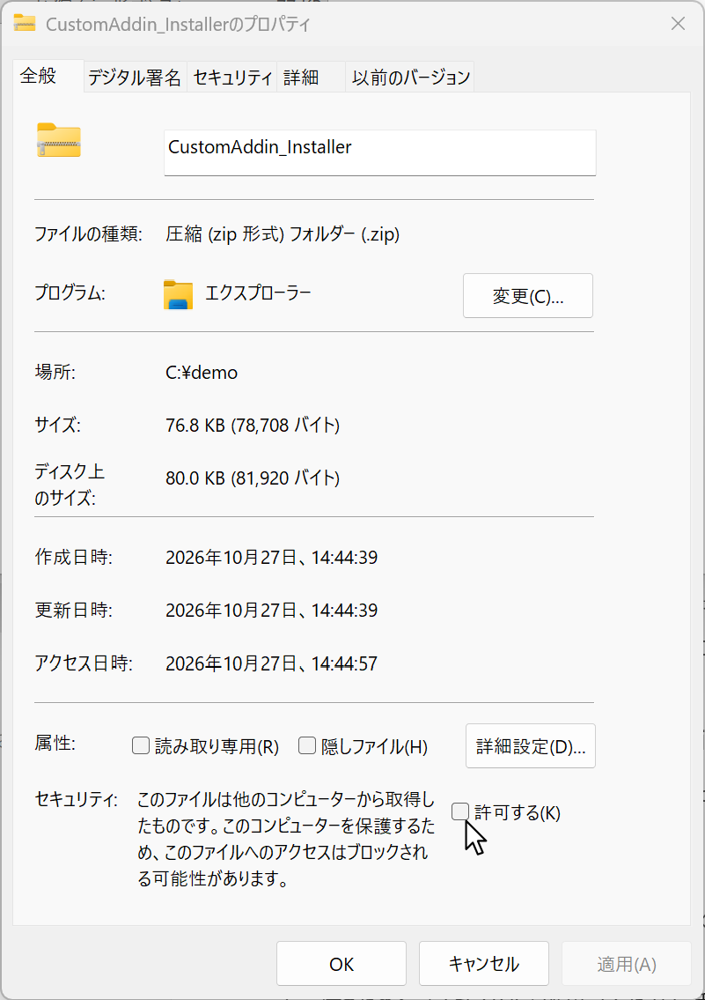
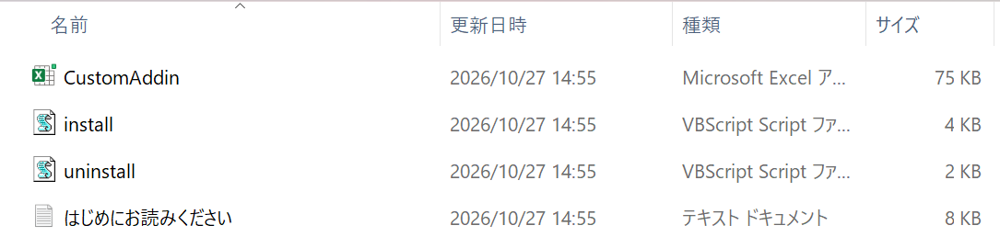
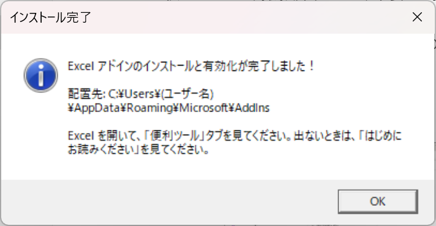

導入の手順
所要時間は、約1分です。Windows版のExcel用です(Macとブラウザ版のExcelでは動きません)。
手順1: ZIPの「ブロック」を解除する(いちばん大切です)
インターネットからダウンロードしたファイルには、Windowsが「ネット由来の印」を付けます。印が付いたままだと、Excelはマクロを動かしません(ボタンが出ない、または押しても動かない)。展開する前に、ZIPの印を外します。
- ダウンロードした「CustomAddin_Installer.zip」を、右クリックします。
- 「プロパティ」を選びます。
- 「全般」タブの右下にある、「セキュリティ」の欄の「許可する」に、チェックを入れます(古いWindowsでは、「ブロックの解除」と表示されます)。
- 「OK」を押します。
- ZIPを展開(解凍)します。


「許可する」の欄が見当たらないときは、すでに外れているか、ブロックされていません。次へ進んでください。
手順2: インストールする
- Excelを、すべて閉じます。
- 展開したフォルダの中の「install.vbs」を、ダブルクリックします(「このファイルを開きますか?」と出たら、「開く」を選びます)。
- 「インストールと有効化が完了しました」と出れば、成功です。
- Excelを開きます。リボンに「便利ツール」というタブが出ています。



install.vbs がやることは、次の3つだけです。
- CustomAddin.xlam を、
%AppData%\Microsoft\AddInsへコピーする - ダウンロードの印を外す
- Excelに、アドインとして登録する
うまくいかないとき
「便利ツール」タブが出ない
- Excelを、いったんすべて閉じて、もう一度開いてください。
- Excelの「ファイル」→「オプション」→「アドイン」を開きます。下の「管理」で「Excelアドイン」を選び、「設定」を押します。「CustomAddin」にチェックが入っているか、確認してください。
- 黄色い帯や赤い帯で「セキュリティ リスク」と出ている場合は、ブロックが残っています。次の項目の手順で、印を外してください。
ボタンを押しても、何も起きない/「マクロが無効」と出る
- エクスプローラーのアドレス欄に、
%AppData%\Microsoft\AddInsと入れて、開きます。 - 「CustomAddin.xlam」を右クリック →「プロパティ」。
- 「許可する」にチェック →「OK」。
- Excelを、すべて閉じて、開き直します。
install.vbs が動かない/エラーが出る
- Excelが1つでも開いていると、失敗することがあります。すべて閉じてから、もう一度試してください。
- 会社や学校のパソコンでは、管理者の設定で、スクリプトの実行やアドインの追加が、禁止されていることがあります。その場合は、管理者にご相談ください。
アドイン本体だけを使う場合
インストーラーを使わず、「CustomAddin.xlam」だけを入れることもできます。CustomAddin.xlam をダウンロードしたあと、上と同じ「許可する」のチェックをして、%AppData%\Microsoft\AddIns に置き、Excelの「ファイル」→「オプション」→「アドイン」→「設定」で、「CustomAddin」にチェックを入れます。
アンインストール(削除)
方法A: 「uninstall.vbs」をダブルクリックします(Excelは、すべて閉じてから)。アドインの登録を外して、ファイルを削除します。あなたのExcelファイルには、触りません。
方法B(手で行う場合): Excelの「ファイル」→「オプション」→「アドイン」→「管理」で「Excelアドイン」→「設定」。「CustomAddin」のチェックを外して「OK」。そのあと、%AppData%\Microsoft\AddIns の「CustomAddin.xlam」を、ごみ箱に入れます。